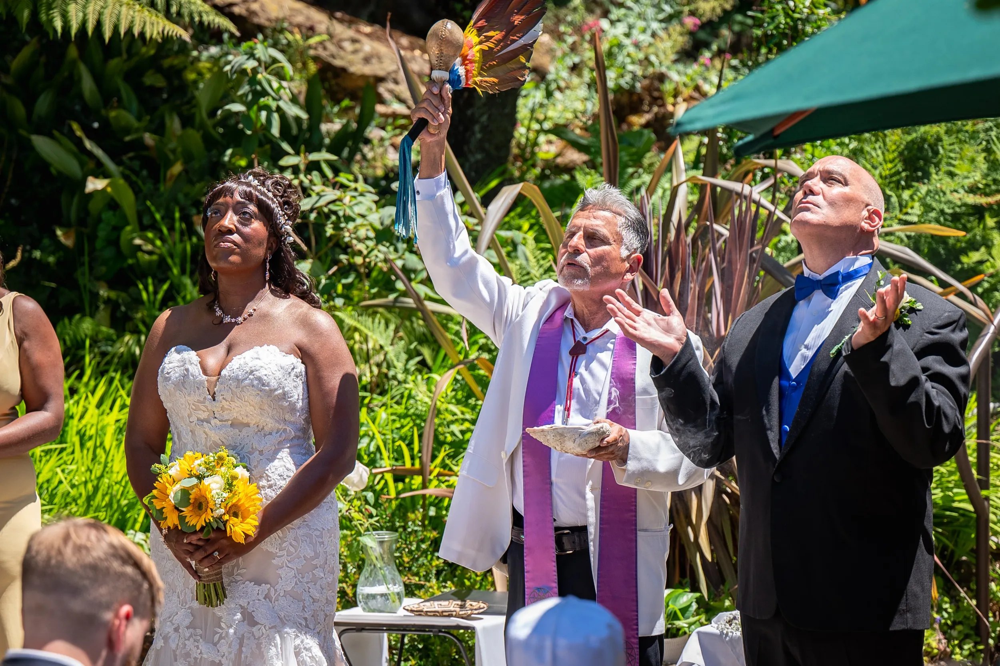
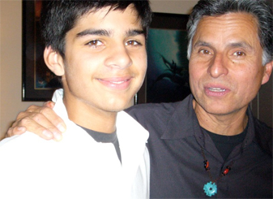

Ordained Minister
Wm Guillermo Ortiz is an ordained minister who received his Master of Divinity in 2006 from the Seminary of Spiritual Peacemaking in Ashland, Oregon. He conducts weddings, coming-of-age ceremonies, last rites and public ceremonies.
Weddings
As a duly ordained minister, I offer wedding services from the simple to the elaborate. I will initially meet with the prospective couple to see if we're a right fit. If so, we proceed to determine the look and feel of the ceremony, vows, special requests, readings, music, rehearsal, etc. Since weddings are joyous ceremonies that celebrate the union of loving couples, it’s important to center the occasion on their love story & invite the blessings of family & friends.

Rites of PassageI offer blessings/ceremonies for Quincenearas, the Latino tradition of honoring the 15th birthday as the transition for girls as they enter womanhood. Coming of age ceremonies for boys usually take place around the 13th birthday & can be overnight in nature. In preparation, in both cases, the youngster's are asked to participate in creating a meaningful event with friends & family through contemplation.